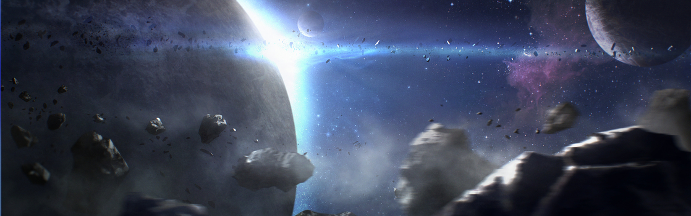

SYSTEM: TARANIS

Excurs - System: Taranis
Das steinige Herz des Grenzgebiets! Taranis ist am besten bekannt als eines der Systeme von Kellar´s Run, aber das Asteroiden- und Mondtrümmerfeld des Taranis Systems hat sich als gefährlich für viele Piloten herausgestellt, die nicht die Fähigkeit besitzen, diese Gefahren zu umschiffen.
Taranis wurde im Jahre 2578 vom berühmten UNE-Untersuchungsschiff Mythic Horizon entdeckt. Als Heimat eines Hauptreihensterns vom Typ-A und von vier Planeten tauchte nur ein HochrisikoKandidat für das Terraforming im ersten Untersuchungsbericht auf. Kurz nach der Entdeckung war das System Ort einer Tragödie: Eines der Untersuchungsschiffe der Mythic Horizon ging mit allen an Bord durch einen Meteoriteneinschlag verloren.
Taranis ist kürzlich Gegenstand der Popkultur geworden, da es eine besondere Rolle im Arena Commander von Original Systems hat. Die „Broken Moon of Taranis“-Karte ist eine von zweien, die in der populären, öffentlichen Demo des sehr beliebten Simulators zur Verfügung steht. Das Setting wirft Spieler in einen Kampf gegeneinander inmitten eines Trümmerfeldes nahe Taranis II. Piloten müssen massiven, fliegenden Felsen sowie pulsierenden Terraformern ausweichen, während sie einen ultra-realistischen „Battle Royal“-Kampf austragen. Die Wahl von Taranis im Arena Commander führte zu erhöhtem – und sehr gefährlichem – Tourismus im System, da sich selbsternannte „Arena Nuts“ von überall vor den lunaren Resten fotografieren und als Hologramm verewigen lassen wollen.
Die besten der besten Schmuggler verstehen es als guten Ort zum Verstecken und ab und zu planen einige hochkarätige Piraten im Gürtel Überfälle, aber selbst sie werden immer wieder Opfer von Steinschlägen.
Der zweite Taranis Gürtel befindet sich hinter Taranis III. Er ähnelt dem inneren Gürtel, ist jedoch weniger dicht und verfügt über eine Reihe sicherer Anflugvektoren – bis zu dem Punkt, an dem der Anflug auf Taranis III weniger gefährlich ist als das Durchqueren des Systems selbst.

„Ophion hat sich den Fortschritten in der Wissenschaft verschrieben und manchmal bedeutet das, Risiken einzugehen. Wir wissen, dass unsere Geoingenieure aus unkonventiellen Backgrounds kommen, aber um wirklich nach Größe zu streben, muss man bereit sein, Risiken einzugehen.“ – Auszug aus der Ophion Terraforming Präsentation
Taranis wurde im Jahre 2578 vom berühmten UNE-Untersuchungsschiff Mythic Horizon entdeckt. Als Heimat eines Hauptreihensterns vom Typ-A und von vier Planeten tauchte nur ein HochrisikoKandidat für das Terraforming im ersten Untersuchungsbericht auf. Kurz nach der Entdeckung war das System Ort einer Tragödie: Eines der Untersuchungsschiffe der Mythic Horizon ging mit allen an Bord durch einen Meteoriteneinschlag verloren.
Taranis ist kürzlich Gegenstand der Popkultur geworden, da es eine besondere Rolle im Arena Commander von Original Systems hat. Die „Broken Moon of Taranis“-Karte ist eine von zweien, die in der populären, öffentlichen Demo des sehr beliebten Simulators zur Verfügung steht. Das Setting wirft Spieler in einen Kampf gegeneinander inmitten eines Trümmerfeldes nahe Taranis II. Piloten müssen massiven, fliegenden Felsen sowie pulsierenden Terraformern ausweichen, während sie einen ultra-realistischen „Battle Royal“-Kampf austragen. Die Wahl von Taranis im Arena Commander führte zu erhöhtem – und sehr gefährlichem – Tourismus im System, da sich selbsternannte „Arena Nuts“ von überall vor den lunaren Resten fotografieren und als Hologramm verewigen lassen wollen.
Taranis I
Der erste Planet im Taranis System ist ein typischer, sonnenbeschienener innerer Zwerg, der zu heiß für menschliche Besiedlung ist. Der Planetoid war die Quelle für einen eigenartigen Zwischenfall in der Mitte des 26. Jahrhunderts: Eine Überprüfung der ersten Untersuchungsdaten (Radar, Scanner, Interferometrie und Langreichweiten-Bildgebung) produzierte ein Bild, das wie ein menschliches Gesicht aussah, welches in die nördliche Polarregion eingeprägt zu sein schien. Das sogenannte „Gesicht von Taranis“ war ein kurzer, kultureller Wahn auf der Erde und sorgte letztendlich für eine privatfinanzierte Expedition zu der Welt, nur um zu bestätigen, dass das Bild lediglich eine Bergkette war, die aus einer unglücklichen Position heraus fotografiert worden war. Der Vorfall zog eine Reihe von Verschwörungstheoretikern an, die darauf bestanden, dass die Regierung Beweise für eine dort lebende Alienzivilisation verschwinden lassen wollte.Taranis II & Asteroidengürtel
Nun am besten bekannt für den Ort des „Broken Moon“, war Taranis II ein Opfer des übereifrigen Terraforming-Wahns der Messer-Ära. Die kernlose Welt wurde zunächst als schlechte Wahl für Terraforming und Kolonisierung klassifiziert. Aber weil die Regierung viel mehr Wert auf das „wir können“ statt auf das „wir sollten“ legte, wurde Taranis eine der vielen Welten, die durch einen Terraforming-Fehltritt zerstört wurde. In diesem Fall war es die Schuld von Ophion Inc., dem GeoEntwicklungsunternehmen, das mit der Prozessierung der Welt betraut war. Die Firma versuchte eine experimentelle Terraforming-Technik mit dem kernlosen Planeten, bei der Energie aus dem ihn umkreisenden Mond abgezogen wurde. Im Falle von Taranis II sorgten minderwertige Teile, Sklavenarbeit und dubiose Wissenschaftler dafür, dass es Ophion fertig brachte, den Mantel von Taranis kleinem Mond zu zerbrechen und ihn in Millionen gefährlicher Stücke zu spalten. Zusätzlich zu einem tödlichen Trümmerfeld, welches vermutlich noch für Jahrhunderte den Planeten bombardieren wird, entzündete der Prozess die Terraforming-Maschinerie im Orbit. Manche der Stapel brennen bis heute und verwandeln die Oberfläche des Planeten in wertlose Asche. Hinter Taranis II und seinem ehemaligen Mond liegt ein extrem dichter Asteroidengürtel, der durchquert werden muss, um das System zu passieren. Auch wenn er ein Risiko für die Navigation darstellt, ist der erste Taranis-Gürtel nicht besonders mineralienreich und nur sehr wenige Abbaufelder wurden dort platziert.Die besten der besten Schmuggler verstehen es als guten Ort zum Verstecken und ab und zu planen einige hochkarätige Piraten im Gürtel Überfälle, aber selbst sie werden immer wieder Opfer von Steinschlägen.
Taranis III & Asteroidengürtel
Taranis III ist eine rauchige, stürmische Welt, die sich am Rand der habitablen Zone des Systems befindet. Die ständigen Stürme des Planeten sind die Quelle des Systemnamens – Taranis war der keltische Gott des Donners. Der Planet besitzt keine atembare Atmosphäre, wurde aber trotzdem von Menschen besiedelt. Die Bethor-Forschungsstation, die im Jahre 2536 zum Studieren von Wetterkontrolltechniken gegründet wurde, expandierte ursprünglich über Jahrhunderte und wurde zu einer vollständigen Siedlung für Tevarinflüchtlinge und menschlicher Auswanderer. Die ursprünglichen Besitzer sind jedoch schon lange abgezogen und Bethor ist Gerüchten zufolge nun unter der Kontrolle eines Syndikats.Der zweite Taranis Gürtel befindet sich hinter Taranis III. Er ähnelt dem inneren Gürtel, ist jedoch weniger dicht und verfügt über eine Reihe sicherer Anflugvektoren – bis zu dem Punkt, an dem der Anflug auf Taranis III weniger gefährlich ist als das Durchqueren des Systems selbst.
Taranis IV
Taranis IV ist ein mittelgroßer Gasgigant, der aus Wasserstoff und Helium besteht. Er ist ein gelegentlicher Zwischenstop für Schiffe, die ihren eigenen Treibstoff herstellen können und sich außerhalb des Betagürtels des Systems befinden. Solche Zwischenstops sind aber selten und weit verstreut. Es kommt fast nie vor, dass jemand ohne ausreichend Treibstoff überhaupt ins Taranis System fliegt und abgesehen davon ist es auch ziemlich unauffällig. Es wurde keine Orbit-Station etabliert.
Reisewarnung
Besucher des Taranis Systems sollten extrem vorsichtig sein. Ein Durchqueren des Systems sollte nur von Top-Piloten und von Schiffscrews probiert werden, die Erfahrung mit Pilotieren in dichten Asteroidenfeldern haben.Ein Flüstern im Wind
„Es ist meine Hoffnung, dass die Opfer unserer Freunde und Kollegen im Streben nach Wissen das System zu einem Leuchtfeuer für die zukünftige Expansion der Menschheit macht.“ – Capt. Glen Whitacre Grabrede für die verlorene Crew der Mythic Horizon.„Ophion hat sich den Fortschritten in der Wissenschaft verschrieben und manchmal bedeutet das, Risiken einzugehen. Wir wissen, dass unsere Geoingenieure aus unkonventiellen Backgrounds kommen, aber um wirklich nach Größe zu streben, muss man bereit sein, Risiken einzugehen.“ – Auszug aus der Ophion Terraforming Präsentation